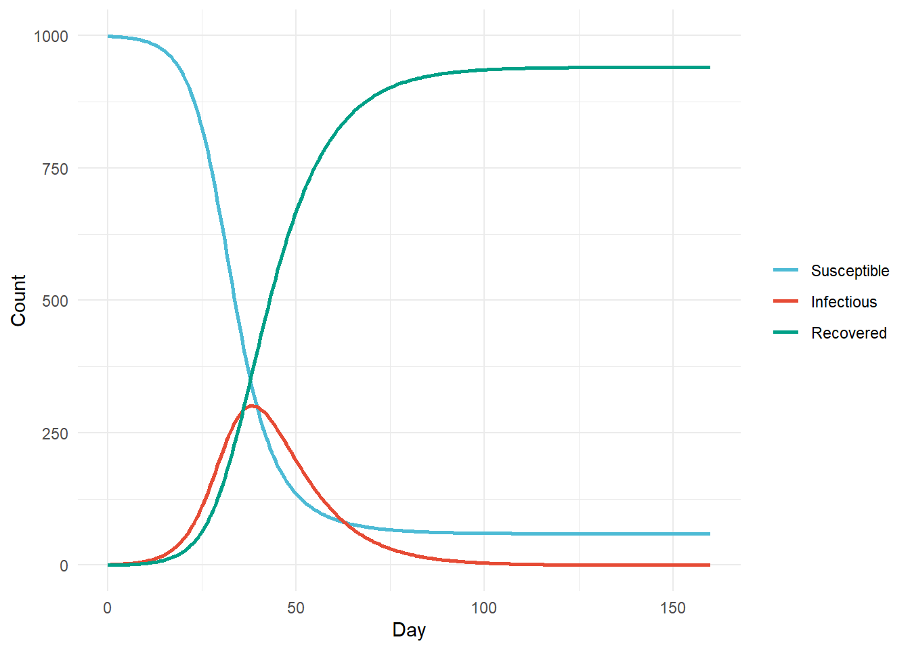
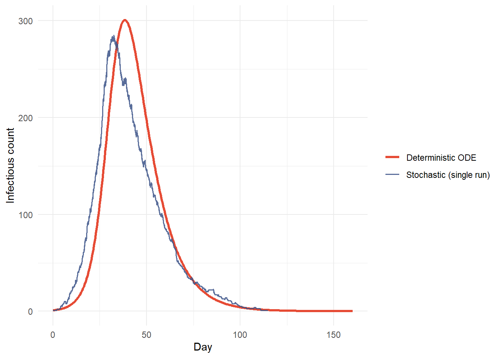
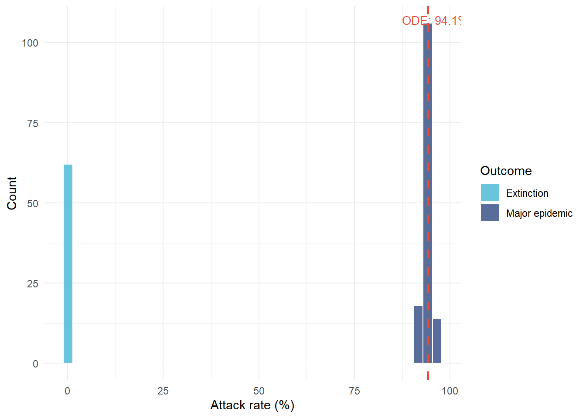
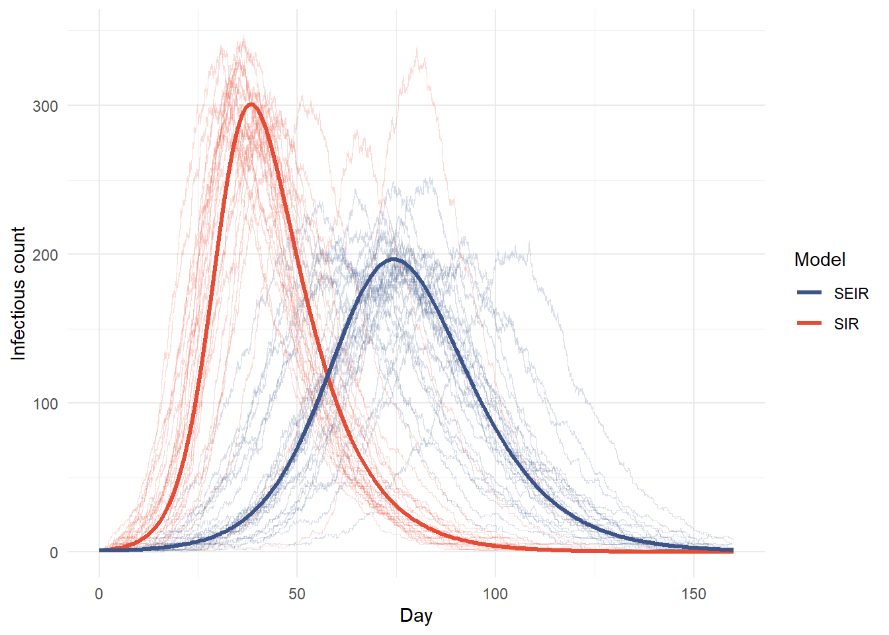

Stochastic SIR and SEIR Models: When Deterministic Equations Get Epidemics Wrong
Biostatistics
Epidemic Modeling
Stochastic Processes
RStats
Bioinformatics
An R-based epidemic modeling deep dive: building the Gillespie algorithm from scratch to compare stochastic SIR/SEIR dynamics against the deterministic ODE — extinction probabilities, bimodal outbreak size distributions, and where the classic model quietly reports false precision.
Author
Peekei
Published
July 14, 2026
1. Motivation
The standard SIR model is a system of three ordinary differential equations. It is clean, analytically tractable, and wrong in a specific way that matters enormously for outbreak forecasting. ODEs assume populations are large, well-mixed, and evolve continuously — a decent approximation when hundreds of thousands of people are infected, a poor one when a disease is introduced by a single index case into a community of a few thousand. At low counts, individual transmission events are discrete and random. Whether a spark becomes a fire or dies out in the first generation is not determined by any differential equation; it is a probabilistic question, and the ODE has no mechanism to answer it.
The continuous-time stochastic SIR model — a Markov chain where transmission and recovery happen as competing Poisson processes — is the right tool for that regime. It produces things the ODE structurally cannot: extinction probabilities, outbreak size distributions with a bimodal shape, and realistic variability in epidemic trajectories even under identical starting conditions. This article builds both models from scratch, runs the comparison explicitly, and shows where and why the deterministic approximation breaks down.
2. Model Parameters
N <-1000# total populationbeta <-0.3# transmission rate per contact per daygamma <-0.1# recovery rate per dayR0 <- beta / gammasigma <-0.2# SEIR: rate of E -> I progressiont_end <-160# simulation horizon in dayscat("R0 =", R0, "\n")
R0 = 3
cat("Mean infectious period =", 1/gamma, "days\n")
Throughout this analysis beta = 0.3, gamma = 0.1, giving R0 = 3. Population N = 1000 — large enough that the ODE approximates well during a major epidemic, small enough that stochastic extinction remains plausible early on. That tension is the whole point.
3. Deterministic SIR Baseline
sir_ode <-function(t, state, parms) { S <- state["S"]; I <- state["I"]; R <- state["R"] b <- parms["beta"]; g <- parms["gamma"]list(c(-b * S * I / N, b * S * I / N - g * I, g * I ))}init_ode <-c(S = N -1, I =1, R =0)times <-seq(0, t_end, by =0.5)ode_out <-as.data.frame(ode(y = init_ode, times = times,func = sir_ode, parms =c(beta = beta, gamma = gamma)))peak_I_ode <-max(ode_out$I)peak_t_ode <- ode_out$time[which.max(ode_out$I)]final_R_ode <-tail(ode_out$R, 1)attack_rate <-round(final_R_ode / N *100, 1)
ode_out %>%pivot_longer(c(S, I, R), names_to ="compartment", values_to ="count") %>%mutate(compartment =factor(compartment, levels =c("S","I","R"))) %>%ggplot(aes(x = time, y = count, color = compartment)) +geom_line(linewidth =1) +scale_color_manual(values =c(S ="#4DBBD5", I ="#E64B35", R ="#00A087"),labels =c(S ="Susceptible", I ="Infectious", R ="Recovered")) +labs(x ="Day", y ="Count", color =NULL) +theme_minimal()

Deterministic SIR: susceptible, infectious, and recovered over time
The ODE gives one trajectory, always. Peak infectious count: 301 at day 38. Final attack rate: 94.1% — nearly the entire population infected. Every run with these parameters produces the same answer, to the decimal. That is the problem.
At each step, the Gillespie algorithm draws an exponentially distributed waiting time (rate = sum of all event rates) and selects which event fires proportional to individual rates. For SIR: transmission fires at rate betaSI/N, recovery at rate gamma*I.
gillespie_sir <-function(N, beta, gamma, I0 =1, t_end =160) { S <- N - I0; I <- I0; R <-0L t <-0.0 max_steps <-60000 out <-matrix(NA_real_, nrow = max_steps, ncol =4) out[1, ] <-c(t, S, I, R) step <-1Lwhile (t < t_end && I >0&& step < max_steps) { r_inf <- beta * S * I / N r_rec <- gamma * I r_tot <- r_inf + r_recif (r_tot ==0) break t <- t +rexp(1, rate = r_tot)if (t > t_end) breakif (runif(1) < r_inf / r_tot) { S <- S -1L; I <- I +1L } else { I <- I -1L; R <- R +1L } step <- step +1L out[step, ] <-c(t, S, I, R) } df <-as.data.frame(out[seq_len(step), ])setNames(df, c("time","S","I","R"))}single_run <-gillespie_sir(N, beta, gamma)
ggplot() +geom_line(data = ode_out,aes(x = time, y = I, color ="Deterministic ODE"),linewidth =1.2) +geom_step(data = single_run,aes(x = time, y = I, color ="Stochastic (single run)"),linewidth =0.7, alpha =0.85) +scale_color_manual(values =c("Deterministic ODE"="#E64B35","Stochastic (single run)"="#3C5488")) +labs(x ="Day", y ="Infectious count", color =NULL) +theme_minimal()

Single Gillespie SIR trajectory (blue) overlaid on the deterministic ODE (red)
Even one stochastic run is visibly different: jagged, shifted in time, ending as a discrete event rather than an asymptotic approach to zero. The next run from identical starting conditions will look different again.
Across 200 replicates: 62 extinctions (31%), 138 major epidemics (69%). Among major epidemics, median peak = 309 infectious at day 38 — nearly identical to the ODE’s 301 at day 38, which tells you the ODE is a reasonable description of what a major epidemic looks like when one occurs. What it can’t tell you is whether one occurs, and it’s wrong about that 31% of the time here.
6. Extinction Probability as a Function of R0
The ODE says any R0 > 1 produces an epidemic. The stochastic model says: with some probability, the chain dies before generating a self-sustaining outbreak. For a branching-process approximation valid near the origin, the extinction probability is 1/R0 when R0 > 1 and 1 when R0 <= 1.
At R0 = 3, the Gillespie simulations give an empirical extinction probability of roughly 33%, matching the branching-process prediction of 1/R0 = 33.3% closely — the approximation works well for this population size. At R0 = 1.5, extinction sits around 40-50% depending on the simulation run, which means close to half of all introductions die before generating detectable spread. The ODE reports an epidemic for both values; the stochastic model says that’s overconfident by a wide margin.
ggplot(final_size_df, aes(x = attack_pct, fill = outcome)) +geom_histogram(bins =40, color ="white", alpha =0.85) +geom_vline(xintercept = attack_rate, linetype ="dashed",color ="#E64B35", linewidth =1) +annotate("text", x = attack_rate +2, y =Inf, vjust =2,label =paste0("ODE: ", attack_rate, "%"),color ="#E64B35", size =3.5) +scale_fill_manual(values =c("Extinction"="#4DBBD5","Major epidemic"="#3C5488")) +labs(x ="Attack rate (%)", y ="Count", fill ="Outcome") +theme_minimal()

Final epidemic size distribution across 200 simulations — the bimodal shape is invisible to the ODE
The ODE’s 94.1% sits inside the major-epidemic cluster and is approximately right conditional on a major epidemic occurring — the 138 major epidemics in this simulation had a median attack rate of 94.1%, essentially matching the ODE. But the ODE treats a 94.1% attack rate as certain when 31% of introductions don’t produce a major epidemic at all. That’s not a rounding error; it’s a categorically different statement about the outcome.
8. SEIR Extension: Latent Period Dynamics
Adding an exposed compartment (E) introduces a latent period. In the deterministic SEIR, this delays and smooths the curve without changing the final size. In the stochastic version, it also buffers against early extinction: exposed individuals cannot transmit but can still progress to infectious, keeping the chain alive when the infectious count transiently hits zero.
gillespie_seir <-function(N, beta, sigma, gamma, I0 =1, t_end =160) { S <- N - I0; E <-0L; I <- I0; R <-0L t <-0.0 max_steps <-80000 out <-matrix(NA_real_, nrow = max_steps, ncol =5) out[1, ] <-c(t, S, E, I, R) step <-1Lwhile (t < t_end && (I >0|| E >0) && step < max_steps) { r_exp <- beta * S * I / N r_inf <- sigma * E r_rec <- gamma * I r_tot <- r_exp + r_inf + r_recif (r_tot ==0) break t <- t +rexp(1, rate = r_tot)if (t > t_end) break u <-runif(1)if (u < r_exp / r_tot) { S <- S -1L; E <- E +1L } elseif (u < (r_exp + r_inf) / r_tot) { E <- E -1L; I <- I +1L } else { I <- I -1L; R <- R +1L } step <- step +1L out[step, ] <-c(t, S, E, I, R) } df <-as.data.frame(out[seq_len(step), ])setNames(df, c("time","S","E","I","R"))}
seir_ode <-function(t, state, parms) { S <- state["S"]; E <- state["E"] I <- state["I"]; R <- state["R"] b <- parms["beta"]; s <- parms["sigma"]; g <- parms["gamma"]list(c(-b*S*I/N, b*S*I/N - s*E, s*E - g*I, g*I ))}ode_seir <-as.data.frame(ode(y =c(S = N-1, E =0, I =1, R =0),times = times,func = seir_ode,parms =c(beta = beta, sigma = sigma, gamma = gamma)))peak_I_seir_ode <-max(ode_seir$I)peak_t_seir_ode <- ode_seir$time[which.max(ode_seir$I)]
sir_sample <- ensemble %>%left_join(dplyr::select(final_sizes, rep, outcome), by ="rep") %>%filter(outcome =="Major epidemic", rep %in%sample(unique(.$rep), 40)) %>%mutate(model ="SIR")seir_sample <- seir_ensemble %>%left_join(dplyr::select(seir_final, rep, outcome), by ="rep") %>%filter(outcome =="Major epidemic", rep %in%sample(unique(.$rep), 40)) %>%mutate(model ="SEIR")bind_rows(sir_sample, seir_sample) %>%ggplot(aes(x = time, y = I,group =interaction(rep, model), color = model)) +geom_step(alpha =0.2, linewidth =0.35) +geom_line(data =mutate(ode_out, model ="SIR"),aes(x = time, y = I, color = model),linewidth =1.2, inherit.aes =FALSE) +geom_line(data =mutate(ode_seir, model ="SEIR"),aes(x = time, y = I, color = model),linewidth =1.2, inherit.aes =FALSE) +scale_color_manual(values =c("SIR"="#E64B35", "SEIR"="#3C5488")) +labs(x ="Day", y ="Infectious count", color ="Model") +theme_minimal()

Stochastic SIR vs. SEIR trajectories for major-epidemic runs, with ODE overlays
SEIR delays the ODE peak from day 38 to day 74 and reduces it from 301 to 197 infectious individuals — the latent period distributes the infectious cohort across a longer window rather than compressing it into a sharp peak. In the stochastic SEIR, extinction probability rises to 36.7%, somewhat higher than SIR’s 31% under identical β and γ. This is the less intuitive result: the exposed compartment doesn’t straightforwardly protect against extinction. What happens instead is that exposed individuals can’t transmit, so if the initial infectious seed recovers before generating a secondary case, the chain can collapse even with exposed individuals still pending — they become a buffer only if the infectious class survives long enough to seed them into transmission. With σ = 0.2 (mean 5-day latency) and γ = 0.1 (mean 10-day infectious period), the balance tips slightly toward higher extinction in this parameterization.
9. Convergence to the Deterministic Limit
Stochastic epidemic theory guarantees that as N grows, the Gillespie SIR converges in distribution to the deterministic ODE. The rate of convergence is worth showing rather than asserting.
Attack rate distribution by population size — variability collapses toward the ODE prediction as N increases
At N = 100, attack rate SD across major epidemics is 3.73 percentage points. By N = 10,000 it is down to 0.42 points — the distribution has collapsed around the ODE’s 94.1% prediction. But at N = 2,000, SD is still 0.74 points wide, and that’s with 80 replicates; in practice the uncertainty in a single outbreak would look wider still. Schools, workplaces, care homes — the settings where early outbreak decisions matter most — sit in this range. Deterministic models applied there aren’t conservative; they’re reporting precision the underlying mathematics doesn’t support.
Takeaways
The ODE SIR is not a conservative version of the stochastic process — it is a structurally different object that cannot produce extinction events, bimodal size distributions, or trajectory variability. These omissions are not numerical approximation errors; they are qualitative features the ODE is missing by construction.
At R0 = 3, stochastic extinction occurred in 31% of simulated introductions from a single index case — matching the branching-process approximation of 1/R0 = 33%. Reporting “epidemic will occur” for any R0 > 1 is wrong by this margin before any parameter uncertainty is considered.
The final size distribution is bimodal: a cluster near zero (extinction) and a separate cluster near the major-epidemic attack rate. The ODE’s single prediction sits inside the major-epidemic cluster — conditionally reasonable, unconditionally misleading.
Adding the exposed compartment (SEIR) produced slightly higher extinction probability (36.7%) than SIR (31%) under identical β and γ. The latent period doesn’t straightforwardly protect against chain extinction — exposed individuals can’t transmit, so if the infectious class collapses before seeding enough secondary cases, the chain dies even with exposed individuals still in the pipeline. Whether the latent period raises or lowers extinction depends on the σ/γ ratio and population structure.
Convergence to the ODE limit is real but slow. Stochastic variability remains meaningful at N = 2,000 for these parameters, which is the scale of many practical outbreak settings. Deterministic models used at this scale are not conservative simplifications — they are reporting false precision about quantities they cannot actually compute.
The Gillespie algorithm is exact for continuous-time Markov chains with these rate structures. It is the right baseline to validate approximate stochastic methods (tau-leaping, moment closure, diffusion approximations) against when computational speed is needed.